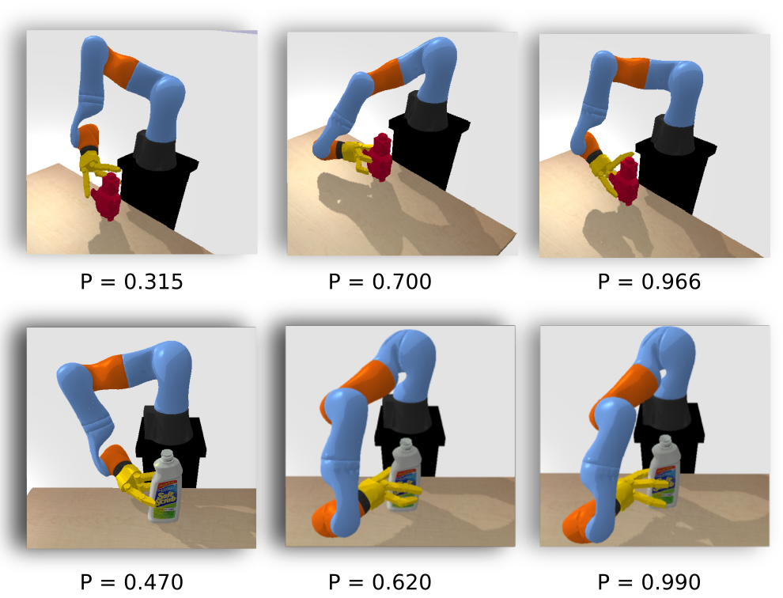
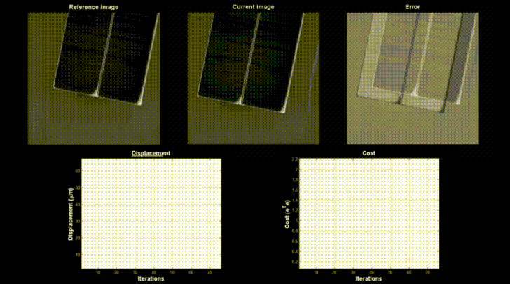

Selected Research
Grasping and Manipulation
Grasping Moving Objects by Dynamic Re-planning: Human to Robot Handover
This work shows how a robot arm can follow and grasp moving objects tracked by a vision system, as is needed when a human hands over an object to the robot during collaborative working. While the object is being arbitrarily moved by the human co-worker, a set of likely grasps, generated by a learned grasp planner, are evaluated online to generate a feasible grasp with respect to both: the current configuration of the robot respecting the target grasp; and the constraints of finding a collision-free trajectory to reach that configuration. Paper Code Video

Grasping with Local Contact Moments (LoCoMo)
This work presents a new grasp planner to grasp arbitrarily shaped objects, observed as partial point-clouds, without requiring: models of the objects, physics parameters, training data, or other a-priori knowledge. A grasp metric based on LoCoMo is proposed. Paper CodeVideo

Benchmarking protocol for grasp planning algorithms
While acknowledging and discussing the outstanding difficulties surrounding the complex topic of robotic grasping, we propose a methodology for reproducible experiments to compare the performance of a variety of grasp planning algorithms. Our protocol attempts to improve the objectivity with which different grasp planners are compared. Paper CodeVideoBenchmark TemplateProtocol Template

Grasping by tactile exploration
This work addresses the problem of simultaneously exploring the shape of a partially unknown object, using tactile sensors on robotic fingers, while also improving finger placement to optimise grasp stability. We show how an initial grasp attempt, based on an initial guess of the overall object shape, yields tactile glances of the far side of the object which enable the shape estimate to be improved. We propose a probabilistic representation of shape, and shape uncertainty, based on Gaussian Process Implicit Surfaces. Combined with a probabilistic estimate of grasp quality, we refine grasp configurations. Paper Code Video
SpectGRASP: Robotic grasping by spectral correlation
This work presents a spectral correlation-based method (SpectGRASP) for robotic grasping of arbitrarily shaped, unknown objects. Given a point cloud of an object, SpectGRASP extracts contact points on the object's surface matching the hand configuration. It neither requires offline training nor a-priori object models. We propose a novel Binary Extended Gaussian Image (BEGI), which represents the point cloud surface normals of both object and robot fingers as signals on a 2-sphere. Spherical harmonics are then used to estimate the correlation between fingers and object BEGIs. Paper Code Video
Computer Vision

Human Action Recognition
This work addresses both general and fine-grained human action recognition in video sequences. Compared with general human actions, fine-grained action information is more difficult to detect and occupies relatively small-scale image regions. Our work improves fine-grained action discrimination, while also retaining the ability to perform general action recognition. PaperCode Video

Articulated (Human) Body Pose Tracking
This work addresses the problem of online tracking of articulated human body poses in dynamic environments. We propose a coupled-layer framework, which uses the previous notions of deformable structure (DS) puppet models. The underlying idea is to decompose the global pose candidate in any particular frame into several local parts to obtain a refined pose. Paper Code Video
Vision-Guided Robot Control
Dual quaternion-based visual servoing for grasping moving objects
This work presents a new dual quaternion-based formulation for pose-based visual servoing. Extending our previous work on local contact moment (LoCoMo) based grasp planning, we demonstrate grasping of arbitrarily moving objects in 3D space. Dual quaternions allow designing the visual servoing task in a more compact manner and provide robustness to manipulator singularities. Given an object point cloud, LoCoMo generates a ranked list of grasp and pre-grasp poses, which are used as desired poses for visual servoing. Whenever the object moves (tracked by visual marker tracking), the desired pose updates, the robot tracks and grasps movig objects. Paper Code Video

Fourier-based visual servoing for nano positioning
Mostly, the positioning tasks inside a scanning electron microscope (SEM) are exhibited by skilled operators via teleoperation. Nevertheless, it is still a difficult task to repeat and hence automatic strategies are indispensable. The regular VS strategies are hard to use with SEM due to multiple instabilities associated with the imaging process. Adressing this, we present an image frequency-based positioning stage controller that does not require any visual tracking and is capable of dealing with electronic images provided by a SEM for automatic nanopositioning. Paper Code Video

Visual Servoing Scheme for Nuclear Waste Decommissioning
Despite enormous remote handling requirements, there has been remarkably little use of robots by the nuclear industry. The few robots deployed have been directly teleoperated in rudimentary ways, with no advanced control methods or autonomy. Most remote handling is still done by an aging workforce of highly skilled experts, using 1960s style mechanical Master-Slave devices. In contrast, we explore how novice human operators can rapidly learn to control modern robots to perform basic manipulation tasks. Paper Code Video
Vision-guided Robot State Estimation
This work presents a vision-based approach for estimating the configuration of, and providing control signals for, an under-sensored robot manipulator using a single monocular camera. Some remote manipulators, used for decommissioning tasks in the nuclear industry, lack proprioceptive sensors because electronics are vulnerable to radiation. In these scenarios, it would be beneficial to use external sensory information, e.g. vision, for estimating the robot configuration with respect to the scene or task. We propose two methods for this purpose. Paper Code Video
Robotic Tele-Manipulation
Assisted Telemanipulation: with Integrated Grasp Planning
This work presents an assisted telemanipulation approach with integrated grasp planning. It also studies how the human teleoperation performance benefits from the incorporated visual and haptic cues while manipulating objects in cluttered environments. The developed system combines the widely used master-slave teleoperation with our previous modelfree and learning-free grasping algorithm by means of a dynamic grasp re-ranking strategy and a semi-autonomous reach-to-grasp trajectory guidance. Paper Code Video

Singularity-Robust Inverse Kinematics Solver for Tele-manipulation
This work investigates the effect of inverse kinematics (IK) on operator performance during the telemanipulation of an industrial robot. Inspired by a successful algorithm used in computer graphics to solve the IK problem and devise smooth movements (FABRIK), we developed a new optimisation-based IK solver that is robust with respect to the robot's singularities and assists the operator in generating smooth trajectories. Our algorithm takes advantage of the kinematic structure of the robot in order to decouple the notoriously difficult IK problem of orientation and position. Paper Code Video